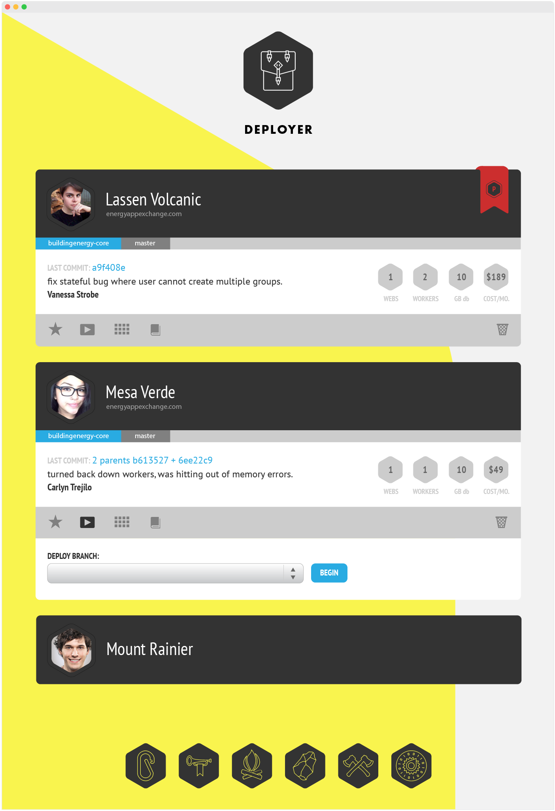
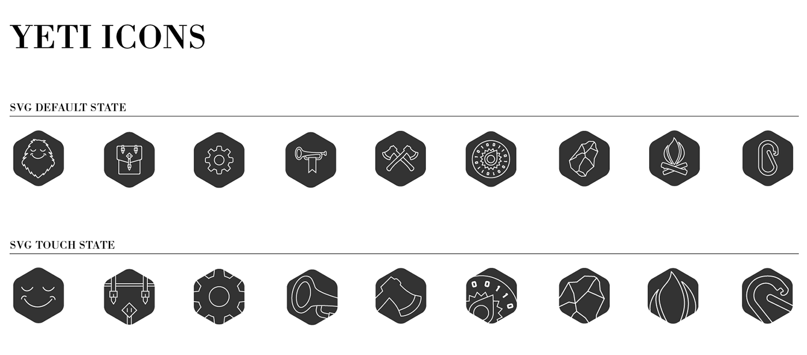
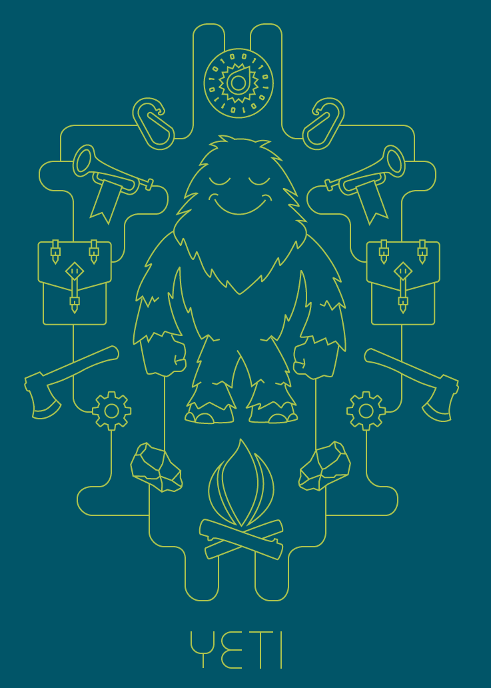
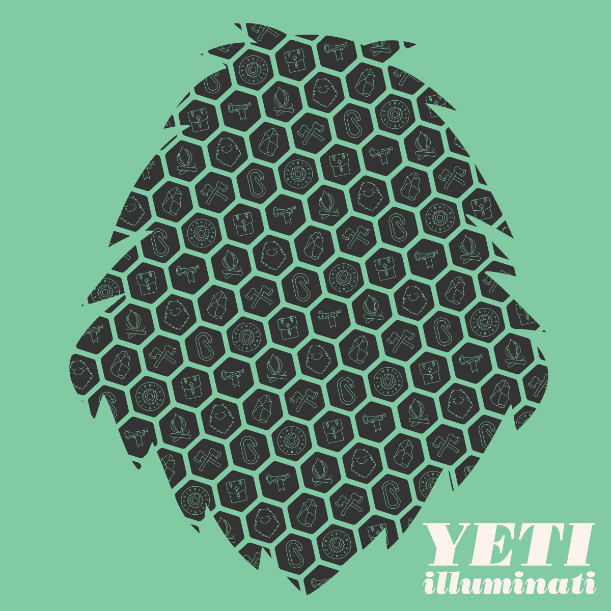

The Yeti Bot
creative direction, bot design, UX / UI design, iconography
The Yeti bot was conceived of and built at Building Energy to help take repetitive, slow, and time consuming tasks and offload them to an automated (but extremely friendly) Yeti. Our Yeti kept track of many DevOps and workflow assignments, help set up and manage AWS and Heroku servers, helped on-board new team members and even alerted us when our bus was scheduled to arrive.
The Yeti Deployer helps teams manage the cost of their Heroku instances.
A custom kit of SVG icons created for the Yeti bot app and Slack/Hipchat integration.
The Yeti is friendly and loves to be helpful.
The Yeti is everywhere and everything.
